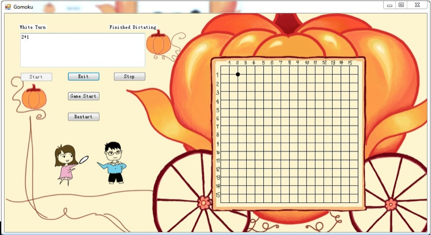

Play Gomoku with Sound (Speech API, VB, photoshop)
Background
Gomoku is an abstract strategy board game. Also called Gobang or Five in a Row, it is traditionally played with Go pieces (black and white stones) on a go board with 19x19 intersections; however, because once placed, pieces are not moved or removed from the board, gomoku may also be played as a paper and pencil game. This game is known in several countries under different names. Black plays first, and players alternate in placing a stone of their color on an empty intersection. The winner is the first player to get an unbroken row of five stones horizontally, vertically, or diagonally (Reference from wiki: http://en.wikipedia.org/wiki/Gomoku).
Design
We developed a desktop game with Speech API.
Speech Lib:
Using Microsoft Speech Lib 5.4, this program may require to use the windows speech assistant, which shows asPlay
Users can play and control the game with their sounds. When they say "start", the game will simplely start and wait the two players to place their chess pieces. Users need to say "column number" and "row number" as indicating X coordinate value and Y coordinate value to place their chess. For example, place white chess piece on the second column and the first row(See figure below). Two players place their chess pieces in turn. Finally, program will detect who is winner if there is an unbroken row of five stones horizontally, vertically, or diagonally.

During the game, three characters on the left panel will show users whose turn to place the chess piece. The information will also be displayed in the top left corner. A dialoge box will appear after one player win the game.
Task Analysis: